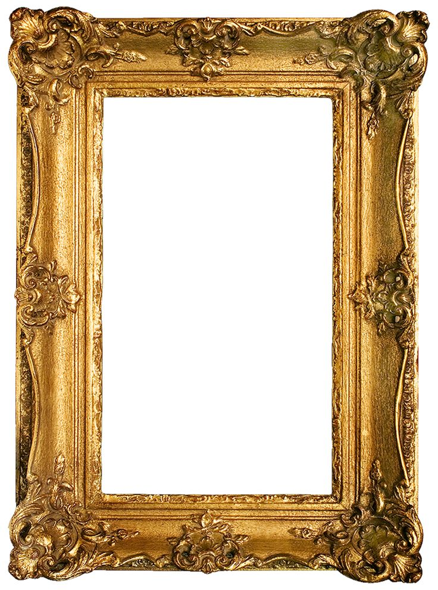

THE CULT OF DONE MANIFESTO
- There are three states of being.
Not knowing, action and completion.
- Accept that everything is a draft.
It helps to get done.
- There is no editing stage.
- Pretending you know what you’re doing
is almost the same as knowing what you
are doing, so just accept that you know
what you’re doing if you don’t
and do it.
- Banish procrastination. If you wait more
than a week to get an idea done, abandon it.
- The point of being done is not to finish but
to get other things done.
- Once you’re done you can throw it away.
- Laugh at perfection. It’s boring and keeps
you from being done.
- People without dirty hands are wrong.
Doing something makes you right.
- Failure counts as done. So do mistakes.
- Destruction is a variant of done.
- If you have an idea and publish it on the
internet, that counts as a ghost of done.
- Done is the engine of more.